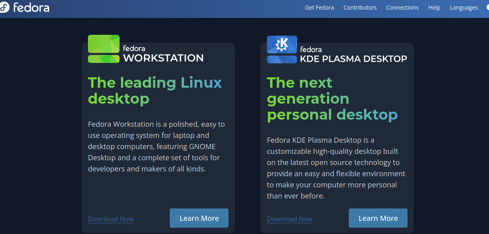
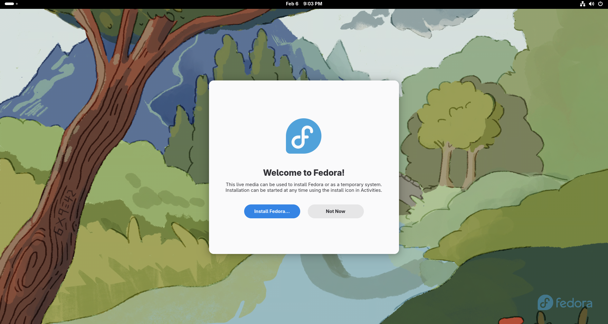
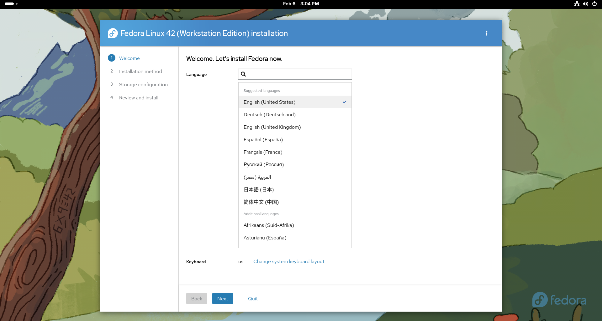
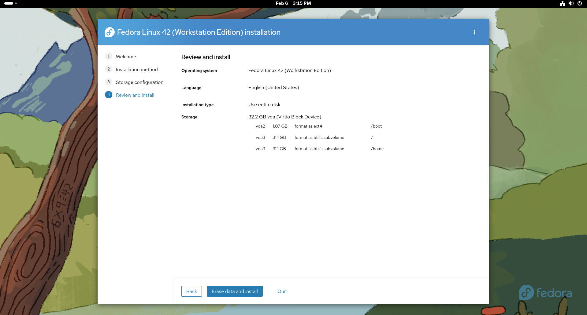
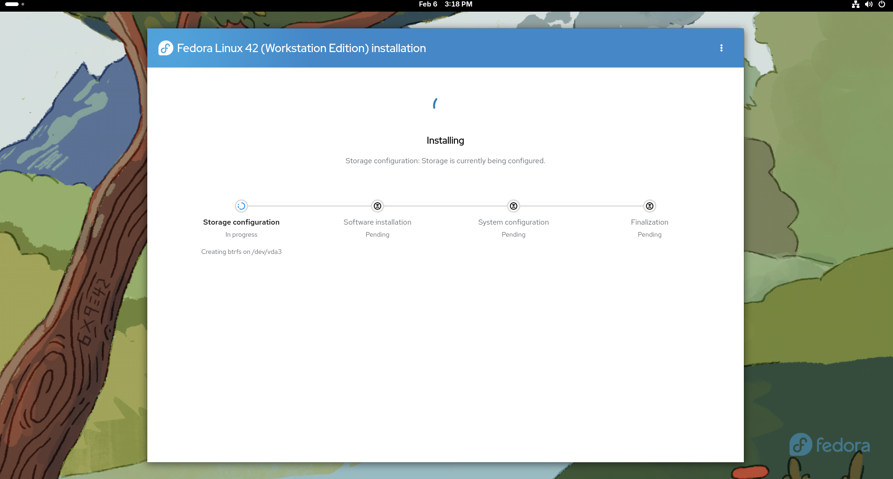
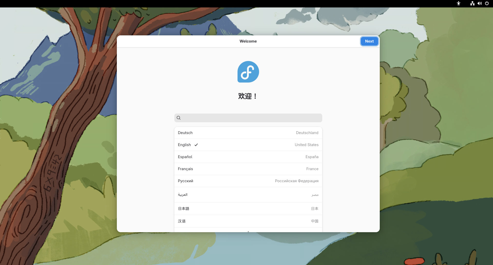

Go to https://fedoraproject.org/#editions to get your Fedora ISO. For now, you have a choice between the first two options: Fedora Workstation, and Fedora KDE Plasma Desktop. Workstation has the GNOME DE by default, while the KDE Plasma Desktop version has KDE Plasma by default. Of course, you can always switch out the DE later, but for now you have a choice between the two of these (there are more spins with other default DEs, but we are just focusing on these two for simplicity). You can refer back to part 1 for the differences between GNOME and Plasma (Plasma is my personal favorite, but you can choose whatever you want).  For this guide, I will be installing Workstation for this guide, but the install process should be pretty similar for each of them.
While you are waiting, go to https://etcher.balena.io/ to download the tool that we will use to flash the USB drive to make it bootable. Just download the version for your system.
I use something called Ventoy to boot multiple ISO files on a single USB stick, and I find it very convenient. If this sounds like something you would find useful, take a look at the docs here: https://www.ventoy.net/en/index.html
Now once you have both your flashing tool and the ISO downloaded, you can flash your USB stick. Note that this will erase everything on it, so don't blame me for any data loss. You have been warned.

Now all you have to do is insert your USB, open up Etcher, select the ISO file, select your USB drive, and flash it! It should just take a few minutes. Once it is done, we are ready to move on to the next step: booting into the live environment.
Once your ISO is flashed, make sure that the target computer is shut down, then take a look at the manual or online documentation (or Reddit, Reddit works too) to find what key you have to spam to get into the BIOS. This part varies for every system, so just look up "how to enter bios on [x device]" and "how to select boot device on [x device]". This part isn't hard, but I can't give instructions for every system ever, because that would be stupid.
Now assuming that you have figured out how to boot off of the USB, you should see the Fedora boot screen and enter the live environment!  Once the live environment boots up, there should be a window that comes up like the one pictured above. Click "Install Fedora...", or "Not Now" if you want to look around for a bit. It should come up with an installation window. The first thing you have to do is select your language.  Next, it should come up with a window asking what disk to install on and a radio button with "Use entire disk". This was the only option for me (it is probably different for you because I'm using a virtual machine). I would reccomend using the whole disk, but if you want to keep the stuff that is on your disk right now, choose something else.
It will then ask you if you want to encrypt your partiton. I would leave that unchecked unless you know what you are doing. By default, it should have your root (/) and home (/home) directories on seperate partitions. That is exactly what we want; keep it like that. Once everything is set up, click "Erase data and install".  You should see a screen like this. Just sit back and wait for the installation to finish.  After installation and a restart, there should be a welcome setup screen that you can go through.  Great, you have a working Fedora system! Now the Debian and Fedora guide reconverge. Click here to go to the conclusion page.